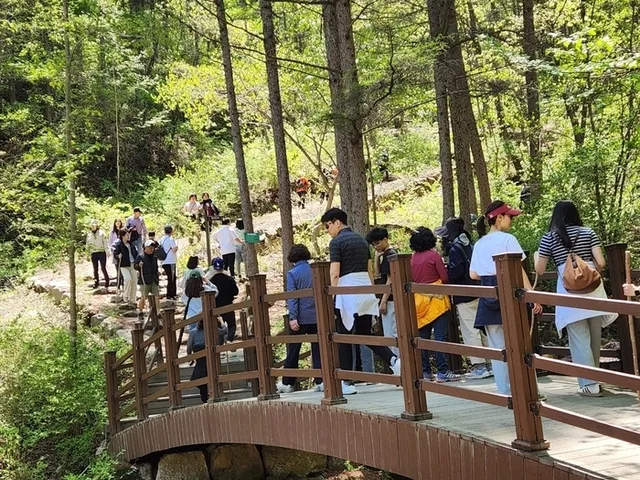
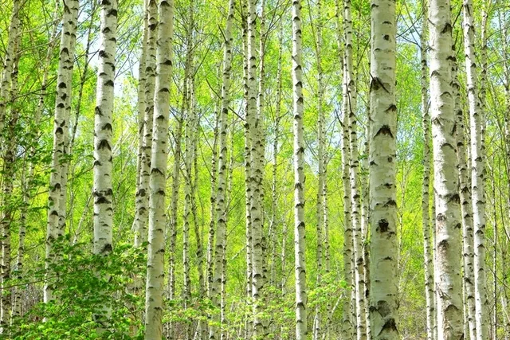
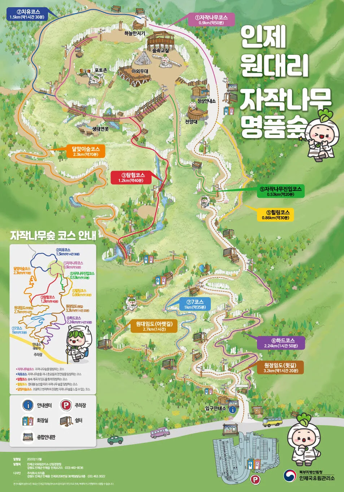

▲ 원대리 자작나무숲. 곧게 뻗은 나무 사이로 햇빛이 그대로 들어온다 ⓒ 인제국유림관리소
1. 입장료는 없다, 주차비는 상품권으로 돌아온다
원대리 자작나무숲은 입장료가 없습니다. 다만 주차료는 승용차 기준 5,000원입니다.
그런데 이 주차료가 인제사랑상품권 5,000원으로 돌아옵니다. 지역 안 식당이나 상점에서 그대로 쓸 수 있어, 인제에서 밥 한 끼라도 먹을 계획이라면 사실상 주차비가 들지 않는 셈입니다.
2. 진짜 비용은 임도 3.2km
주차장에서 자작나무숲 입구까지는 임도를 따라 약 3.2km를 걸어야 합니다. 경사는 완만하지만 편도로 50분에서 1시간이 걸립니다.
왕복 이동 시간과 숲 안에서 머무는 시간을 더하면 최소 3~4시간을 잡아야 합니다. 짧게 둘러보고 나올 수 있는 곳이 아니라, 반나절 일정으로 계획하는 편이 낫습니다.

▲ 봄철 주말이면 탐방로에 사람이 몰린다. 임도를 걷는 시간까지 감안해 일정을 짜야 한다 ⓒ 인제국유림관리소
3. 69만 그루, 138ha
이 숲은 1974년부터 1995년까지 138ha에 자작나무 69만 그루를 심어 만들어졌습니다. 20년 넘게 조림한 결과가 지금의 규모입니다.

▲ 곧게 뻗은 흰 줄기가 빽빽하게 늘어서 있다. 69만 그루가 만든 밀도다 ⓒ 인제국유림관리소
4. 코스는 7개, 짧게도 길게도 걸을 수 있다
숲 안 탐방로는 7개 코스로 나뉘어 있습니다. 가장 짧은 자작나무코스는 0.9km·약 50분이고, 가장 긴 하드코스는 2.24km·약 1시간 50분입니다.
| 코스 | 거리 | 소요 시간 |
|---|---|---|
| 자작나무코스 | 0.9km | 약 50분 |
| 탐험코스 | 1.2km | 약 40분 |
| 자작나무진입코스 | 0.53km | 약 20분 |
| 힐링코스 | 0.86km | 약 30분 |
| 치유코스 | 1.5km | 약 1시간 30분 |
| 하드코스 | 2.24km | 약 1시간 50분 |
임도를 걸어 들어가는 데만 편도 50분이 걸린다는 점을 감안하면, 시간이 부족한 방문객은 자작나무진입코스나 힐링코스처럼 짧은 코스 위주로 계획하는 편이 현실적입니다.

▲ 원대리 자작나무숲 코스 안내도. 짧은 코스와 긴 코스가 갈라지는 지점을 미리 봐두면 좋다 ⓒ 인제국유림관리소
5. 자차 여행자를 위한 정리
첫째, 주차료 5,000원은 손해가 아닙니다. 인제사랑상품권으로 그대로 돌려받으니 지역에서 식사나 간식 비용으로 쓰면 됩니다.
둘째, 임도 3.2km를 계산에 넣으십시오. 숲 안 코스 시간만 보고 일정을 짜면 왕복 1시간 40분~2시간이 빠진 채로 계획하는 실수가 나옵니다.
셋째, 전체 일정은 최소 3~4시간으로 잡으십시오. 짧게 들렀다 나오는 코스가 아닙니다.
넷째, 시간이 부족하면 짧은 코스부터 고르십시오. 7개 코스 중 20~30분짜리도 있어 체력이나 일정에 맞춰 조절할 수 있습니다.
정리하면 이렇습니다. 원대리 자작나무숲에서 실제로 드는 비용은 원화가 아니라 시간입니다. 주차비는 상품권으로 돌아오지만, 임도를 걷는 시간은 아무도 돌려주지 않습니다.